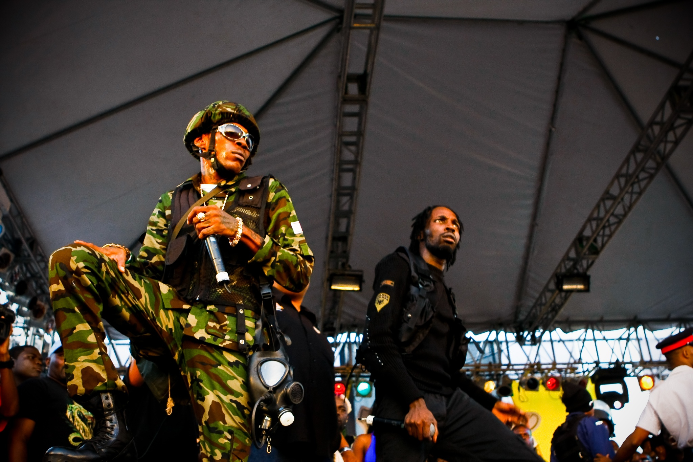

A public feud between the two biggest dancehall artists, Vybz Kartel and former collaborator Mavado arose towards the end of 2006, stemming from Vybz’ much publicized departure from the dancehall conglomerate group The Alliance. The feud resulted in numerous diss tracks released, in which each artist dissed the other and their associates over popular dancehall rhythms. The public feud, which dominated Jamaican media and, to a certain extent, Jamaican culture, with the two artists’ factions, Gaza (Kartel) and Gully (Mavado), being adopted by Jamaican youth, in some cases leading to street violence.
